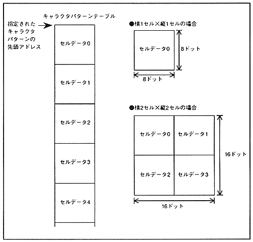

When the character pattern consists of 4 cells, the cell data used for the same character pattern must be stored continuously in the character pattern table. Figure 4.7 shows the relationship between the cell layout according to character size (number of cells in the character pattern) and the character pattern table.
Figure 4.7 Cell placement by character size
